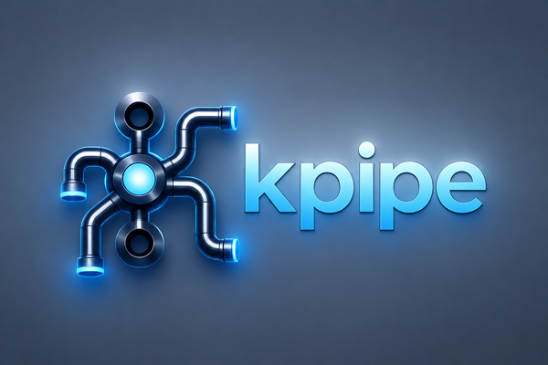

Fast is the easy part. Here is why you can trust KPipe with your offsets.

KPipe, part 3 of 3: a simpler way to structure consumers · the first benchmarks · fast is the easy part
Last time I benchmarked KPipe I ended with a warning about my own numbers. Single runs moved 5 to 40 percent between iterations. There was no latency-percentile data. I told you to read the percentages as one-sigma indicators and not to quote the absolute throughput at anyone.
That was the honest thing to say at the time, and it was also a promissory note. This post is me
paying it. The numbers here come from a quiesced machine - no browser, no IDE indexing, on mains
power - with five JMH forks instead of one, the full workMicros sweep out to 100 ms per record,
and latency percentiles alongside. The raw JSON and a dated markdown snapshot are committed in
benchmarks/results/ as always. Where the last post had ±5-40% error bars, this
one has ±0.1-6% on nearly every cell.
And then, because throughput is the easy half, the part that matters more: how I know KPipe does not lose your messages, and the story of an optimization I was sure would win and had to publish as a loss instead.
The numbers, redone right
The headline regime is 10 to 100 ms of work per record - the range where a real consumer lives once it is doing a database write or an HTTP call per message instead of just counting bytes. Throughput, in records per second, at-least-once delivery, on a 6-core laptop:
| Runtime (delivery guarantee) | 10ms / record | 100ms / record |
|---|---|---|
KPipe PARALLEL |
57.6k ± 6% | 40.0k ± 3% |
KPipe KEY_ORDERED (per-key FIFO) |
34.5k ± 0.3% | 5.2k ± 0.3% |
Confluent PC UNORDERED |
8.7k ± 0.3% | 968 ± 0.1% |
Confluent PC KEY (per-key FIFO) |
8.7k ± 0.3% | 968 ± 0.1% |
| Reactor Kafka | 980 ± 0.2% | did not finish |
That is roughly 6.6x Confluent Parallel Consumer at 10 ms and 41x at 100 ms. The last post stopped at 1 ms of work and reported 4-7x; extend into the range where consumers actually spend their time and the gap keeps widening.
Two asterisks on that table, because you should get to poke at a benchmark before you believe it. Reactor Kafka at 100 ms did not finish - every fork blew past the harness’s two-minute drain budget at an effective ~105 rec/s, so I recorded it as a did-not-finish rather than extrapolate a flattering-to-me number. And Confluent Parallel Consumer 0.5.3.3 is the last release before that project was retired in May, so I am benchmarking against the final version there will ever be.
Why the gap widens instead of closing
Confluent’s numbers deserve a second look: ±0.1% error bars at 100 ms, because they are pinned to a
ceiling. CPC runs a pool of 100 worker threads. At 10 ms per record that pool tops out at
100 workers / 10 ms = 10,000 rec/s; at 100 ms, 100 / 100 ms = 1,000 rec/s. The benchmark measured 8,696 and 968. The model predicts
the measurement almost exactly, because a platform-thread pool has a hard ceiling and that workload
sits right on it.
KPipe has no such pool. It runs one virtual thread per record, so its throughput tracks what the
machine can actually overlap. That is the library’s whole thesis in one comparison: a pool of 100
platform threads cannot beat workers / work-time however you tune it, and a virtual thread per
record has no ceiling to hit - which is why the multiple grows with per-record latency instead of
shrinking.
Now the bill. KPipe allocates the most per record of anything in the field, about 1.7 KB/op against CPC’s ~35 B/op, most of it the fresh virtual thread. You are trading memory for the throughput lead under blocking work, and the allocation profile sits in the repo next to the throughput JSON so you can decide whether the trade suits you.
The one place I will not oversell: at sub-millisecond work, KEY_ORDERED versus CPC’s KEY mode is
genuinely box-dependent. On a 4-vCPU CI runner KPipe wins 1.42x; on my 12-thread laptop it is 0.86x,
slightly behind. I will come back to that number at the end of this post, because it has a story.
The half a throughput chart cannot show
Every Kafka-library benchmark, mine included until now, skips the question that matters more: is
the fast consumer also a correct one? A throughput chart cannot tell you. It is trivial to be
fast if you are allowed to drop a record on a rebalance or double-commit an offset under load. The
whole point of KPipe over a hand-rolled Consumer.poll loop is the operational stack - and that
stack is only worth anything if it is right.
So the claim KPipe makes is “at-least-once with parallel processing,” and I do not want you to take that on faith. Every CI run gates on a jcstress suite - 21 concurrency-stress classes as of 1.18, four modules - that hammers the offset lifecycle, the backpressure handshake, and the dispatcher’s per-key handoff under every thread interleaving the scheduler can produce. A single FORBIDDEN outcome - one lost record, one double-run, one offset committed ahead of an unfinished one - fails the build. A unit test asserts one path through the code. This searches every interleaving for the one that breaks the guarantee.
Building that suite was not academic. It found three real bugs before any user hit them:
- An offset-tracking race where a concurrent add-versus-remove-if-empty on the pending-offset set could drop an offset from the commit frontier.
- Silent data loss on DLQ-send failure: when a dead-letter send failed, the record was being marked processed anyway. Now a failed DLQ send leaves the offset uncommitted so the record is redelivered - a down DLQ applies backpressure instead of quietly eating messages.
- A circuit breaker blind to the batch path, tripping on per-record failures but not on the batch sink’s.
None of the runtimes I benchmark against document their delivery guarantee this way, let alone test it. That pitch is slower and less clickable than “41x”, but it is the one I would want as an operator: the fast number gets you to try it, the stress suite is why you keep it in front of your offsets.
The 1.18 release leaned into the same idea. Dead-letter records now carry all their original
headers plus a full x-dlq-* envelope, including a source timestamp, so a DLQ is a replayable
record of what happened rather than a payload graveyard. A throwing metrics callback can no longer
crash a worker, abort a batch flush, or flip a successful send into a reported failure - your
observability code cannot take down the data path. And it shipped the feature I get asked about
most: Protobuf with Confluent Schema Registry, end to end, wire-compatible with Confluent’s own
KafkaProtobufSerializer, as an opt-in module so the JSON and Avro users carry none of its weight.
The same verification, handed to you
The jcstress suite is how I verify the library. But “the library is correct” only goes so far: your pipeline is your code, and most Kafka test setups make you choose between mocking so much that you test nothing real, or standing up a Testcontainers broker and paying five seconds of Docker per test.
1.18 ships a third option: kpipe-test, a Docker-free kit that drives a real KPipeConsumer -
the production dispatcher, offset manager, and sink code - over a seeded in-memory consumer. Your
test exercises the actual runtime, in about 5 to 20 ms, with no broker:
final var captured = new CapturingSink<Map<String, Object>>();
try (final var driver = TestStream.<Map<String, Object>>builder(JsonFormat.INSTANCE)
.pipe(addTimestamp)
.filter(isActive)
.toCustom(captured)
.build()) {
driver.send(activeRecord);
driver.send(inactiveRecord);
driver.flush(); // returns only once every record has drained
assertThat(captured.captured()).containsExactly(expectedActiveWithTimestamp);
}flush() is the whole trick: it returns only when every sent record is polled, accounted for, and
drained, so the assertion afterward is deterministic instead of a Thread.sleep and a prayer. There
is a CrashRestartHarness in the same kit for the nastier question - does the consumer reprocess
the right window after a crash - that drives two real consumer phases across a commit point without
a live broker to flake on. So the library’s verification story now covers your code too, with no
Docker in the loop.
The optimization that looked great and did not pan out
I will end on the number I said I would come back to.
The KEY_ORDERED dispatcher - the mode that guarantees per-key ordering - used a single lock for
all of its internal bookkeeping. On the 12-thread box, at sub-millisecond work, that lock was my
prime suspect for why KPipe trailed CPC’s KEY mode: more cores meant more threads contending on
one lock. So I rewrote it. The global lock became a concurrent map with one lightweight monitor per
key, so workers for different keys never contend. I grilled the design, verified it under jcstress
with a new stress test that proves the tricky eviction race is actually reached, and benchmarked it
in isolation.
In isolation it was a rout: +122% throughput at high key cardinality, +112% at moderate. The lock really had been the bottleneck in the dispatcher, and removing it made the dispatcher scale up with cores instead of down. Merged, verified, done.
Then I re-ran the actual broker benchmark - the 1 ms KEY_ORDERED cell, the one that started the
whole investigation - to watch it flip.
It did not flip. 52,949 rec/s before, 52,216 after. Flat. The ratio against CPC KEY moved from
0.83x to 0.86x, entirely inside the noise.
Here is what happened. The micro-benchmark isolated pure dispatch cost, and there the lock was the whole story. But at the broker, with a real 1 ms of work per record, the per-record budget is dominated by fetch, deserialization, offset tracking, and the per-key serialization the mode exists to provide - the dispatcher lock was a rounding error inside all of that. I removed a real bottleneck that was not the bottleneck there. The rewrite is a genuine win for dispatch-bound workloads and it makes the code better; it simply does not move the broker number I hoped it would, and the README’s sub-millisecond caveat stays exactly as it was written.
I could have shown you the +122% and stopped. The reason I did not is the same reason the jcstress suite exists: the point of measuring a thing is to find out what is true, and a benchmark you only publish when it flatters you is just an ad. I made a prediction, measured it, and watched it miss. That is a result too.
Closing
The first two posts made the case that KPipe is a nicer way to write a Kafka consumer and that it is fast. This one is the part I care about more: it is fast in the regime you actually run in, a stress suite hammers the at-least-once guarantee on every commit, and when my own optimization missed I told you so.
The ask is one line, Java 25 or later:
implementation("io.github.eschizoid:kpipe-api:1.18.0")The numbers are the reason to try it. The stress suite is the reason to leave it running while you sleep.